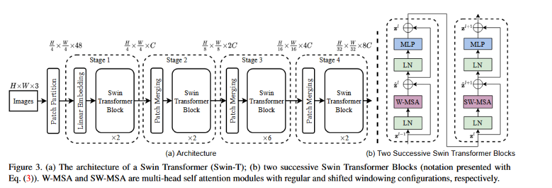

<!DOCTYPE html>


<html lang="zh-CN">


<head>
  <meta name="baidu-site-verification" content="codeva-NSg7ynviLa" />
  <meta charset="utf-8" />
    
  <meta name="viewport" content="width=device-width, initial-scale=1, maximum-scale=1" />
  <title>
    swin_transformer |  
  </title>
  <meta name="generator" content="hexo-theme-ayer">
  
  <link rel="shortcut icon" href="/images/mojie.jpg" />
  
  
<link rel="stylesheet" href="/dist/main.css">

  <link rel="stylesheet" href="https://cdn.jsdelivr.net/gh/Shen-Yu/cdn/css/remixicon.min.css">
  
<link rel="stylesheet" href="/css/custom.css">

  
  <script src="https://cdn.jsdelivr.net/npm/pace-js@1.0.2/pace.min.js"></script>
  
  

  

<link rel="alternate" href="/atom.xml" title="null" type="application/atom+xml">
</head>

</html>

<body>
  <div id="app">
    
      
    <main class="content on">
      <section class="outer">
  <article
  id="post-swin-transformer"
  class="article article-type-post"
  itemscope
  itemprop="blogPost"
  data-scroll-reveal
>
  <div class="article-inner">
    
    <header class="article-header">
       
<h1 class="article-title sea-center" style="border-left:0" itemprop="name">
  swin_transformer
</h1>
 

    </header>
     
    <div class="article-meta">
      <a href="/posts/12f0d0b3/" class="article-date">
  <time datetime="2026-11-10T06:46:57.000Z" itemprop="datePublished">2026-11-10</time>
</a>   
<div class="word_count">
    <span class="post-time">
        <span class="post-meta-item-icon">
            <i class="ri-quill-pen-line"></i>
            <span class="post-meta-item-text"> 字数统计:</span>
            <span class="post-count">1.5k</span>
        </span>
    </span>

    <span class="post-time">
        &nbsp; | &nbsp;
        <span class="post-meta-item-icon">
            <i class="ri-book-open-line"></i>
            <span class="post-meta-item-text"> 阅读时长≈</span>
            <span class="post-count">5 分钟</span>
        </span>
    </span>
</div>
 
    </div>
      
    <div class="tocbot"></div>


  
    <div class="article-entry" itemprop="articleBody">
       
  <p>记录一下 Swin Transformer 的原理。</p>
<span id="more"></span>
<p>资料1是文献，资料2是代码。</p>
<h3 id="一整体架构四阶段分层处理">一、整体架构：四阶段分层处理</h3>
<p>Swin Transformer采用类似于卷积神经网络（CNN）的<strong>四阶段分层架构</strong>，逐步将输入图像下采样为不同分辨率的特征图。</p>
<p></p>
<p><strong>阶段一（Stage 1）</strong>
- 输入图像（如224×224×3）首先经过 <strong>Patch Partition</strong> 模块，将图像分割为4×4的不重叠图像块（Patch），每个块的原始像素特征为 4×4×3 = 48 维。
- 随后经过 <strong>Linear Embedding</strong> 层，将48维特征线性投影到模型维度 C（如96维），得到形状为 56×56×96 的特征图。
- 在此特征图上应用多个 <strong>Swin Transformer Block</strong>，保持分辨率不变（H/4 × W/4）。
- 注意：<strong>这里没有像 VIT 那样加入位置编码信息</strong>，而是在注意力计算内部加入相对位置编码信息。</p>
<p><strong>阶段二至四（Stages 2-4）</strong>
- 每个阶段开始前，通过 <strong>Patch Merging</strong> 层进行下采样：将2×2邻域的Patch拼接，通道数变为4C，再通过线性层压缩为2C。这使得特征图分辨率减半（下采样2倍），通道数翻倍。
- 随后在该分辨率上继续应用Swin Transformer Block。</p>
<p>最终四个阶段输出的特征图分辨率分别为原图的 <strong>1/4、1/8、1/16和1/32</strong>，形成类似CNN的特征金字塔。</p>
<hr />
<h3 id="二swin-transformer-blockw-msa与sw-msa交替">二、Swin Transformer Block：W-MSA与SW-MSA交替</h3>
<p>Swin Transformer的核心计算单元是 <strong>Swin Transformer Block</strong>。每个Block由两个连续的Transformer层组成：</p>
<ul>
<li><strong>第一层</strong>：使用 <strong>窗口多头自注意力（W-MSA）</strong>，后接MLP和残差连接</li>
<li><strong>第二层</strong>：使用 <strong>移位窗口多头自注意力（SW-MSA）</strong>，后接MLP和残差连接</li>
</ul>
<p>每个子层都包含 <strong>LayerNorm（LN）</strong> 和残差连接。并且 Swin Transformer Block <strong>严格保持输入和输出的维度（Shape）不变</strong>，既不会改变特征图的高宽（分辨率），也不会改变通道数。</p>
<h4 id="w-msa窗口自注意力">2.1 W-MSA：窗口自注意力</h4>
<p>W-MSA将自注意力计算<strong>限制在互不重叠的局部窗口内</strong>（默认窗口大小为7×7，即每个窗口包含49个Patch Token）。</p>
<p>对于窗口内的特征矩阵 $ X <sup>{K</sup>2 d} <span class="math inline">\(（\)</span> K $为窗口大小），自注意力计算为：</p>
<p><span class="math display">\[
\text{Attention}(Q, K, V) = \text{Softmax}\left(\frac{QK^T}{\sqrt{d}} + B\right)V
\]</span></p>
<p>其中 <strong>B 为相对位置偏置（Relative Position Bias）</strong>，用于编码窗口内Patch之间的相对空间位置关系。</p>
<p><strong>计算复杂度分析</strong>：
- 全局自注意力：$ () = 4hwC^2 + 2(hw)^2C $
- 窗口自注意力（W-MSA）：$ () = 4hwC^2 + 2M^2hwC $</p>
<p>其中 $ h,w $ 为特征图高宽，$ M $ 为窗口大小（默认7）。当 $ M $ 固定时，复杂度与图像尺寸 $ hw $ 成<strong>线性关系</strong>，而非平方关系。</p>
<h4 id="sw-msa移位窗口自注意力">2.2 SW-MSA：移位窗口自注意力</h4>
<p>W-MSA的缺点是<strong>窗口之间完全隔绝，信息无法跨窗口流通</strong>。SW-MSA通过<strong>移动窗口分区</strong>来解决这一问题。</p>
<p>具体做法是：在连续的Swin Transformer Block中，<strong>交替使用两种窗口划分方式</strong>。在SW-MSA层中，窗口相对于上一层<strong>偏移了 $ (M/2 , M/2 ) $ 个像素</strong>。</p>
<p>移位后会产生更多窗口（从 $ h/M w/M $ 变为 $ (h/M + 1) (w/M + 1) $）。为了高效计算，Swin Transformer采用 <strong>cyclic shift（循环移位）</strong> 技术：</p>
<ol type="1">
<li>将特征图通过 <code>torch.roll</code> 进行循环移位</li>
<li>在移位后的特征图上执行标准的窗口分区和自注意力计算</li>
<li>使用<strong>注意力掩码（Attention Mask）</strong> 屏蔽掉原本不属于相邻位置的无效注意力</li>
<li>最后通过反向循环移位恢复原始位置</li>
</ol>
<p>这种方式使得<strong>新的窗口能够覆盖上一层窗口的边界区域</strong>，从而建立跨窗口的信息连接，同时保持了计算效率。</p>
<hr />
<h3 id="三相对位置编码relative-position-bias">三、相对位置编码（Relative Position Bias）</h3>
<p>与ViT使用绝对位置编码不同，Swin Transformer在每个窗口内使用<strong>可学习的相对位置偏置（Relative Position Bias）</strong> $ B <sup>{M</sup>2 M^2} $。</p>
<p><strong>实现方式</strong>：
1. 计算窗口内每个Patch之间的<strong>成对相对位置坐标</strong>（范围在 <span class="math inline">\([-(M-1), M-1]\)</span> 之间）
2. 将二维相对坐标映射为一维索引
3. 维护一个可学习的参数表 <code>relative_position_bias_table</code>，形状为 <span class="math inline">\([(2M-1)^2, nH]\)</span>（$ nH $为注意力头数）
4. 通过索引从参数表中取出对应的偏置向量，加到注意力分数上</p>
<p>相对位置偏置增强了模型的<strong>平移不变性</strong>，实验证明其能有效提升模型性能。</p>
<hr />
<h3 id="四patch-merging下采样细节">四、Patch Merging：下采样细节</h3>
<p>Patch Merging是Swin Transformer实现层次化特征的关键操作：</p>
<ol type="1">
<li>将特征图 $ X ^{H W C} $ 中<strong>2×2邻域的Patch取出</strong></li>
<li>将这4个Patch在通道维度上拼接，得到 $ ^{H/2 W/2 4C} $</li>
<li>通过一个线性层将通道数从 $ 4C $ 降为 $ 2C $</li>
</ol>
<p>这样，每个阶段结束后，特征图分辨率减半，通道数翻倍。</p>
<hr />
<h3 id="五与vit的核心差异">五、与ViT的核心差异</h3>
<table>
<thead>
<tr>
<th>特性</th>
<th>ViT</th>
<th>Swin Transformer</th>
</tr>
</thead>
<tbody>
<tr>
<td>特征图</td>
<td>单一分辨率</td>
<td>层次化多尺度（4个阶段）</td>
</tr>
<tr>
<td>自注意力</td>
<td>全局</td>
<td>局部窗口（W-MSA）+ 移位窗口（SW-MSA）</td>
</tr>
<tr>
<td>计算复杂度</td>
<td>$ O(N^2) $</td>
<td>$ O(N) $（与图像尺寸线性关系）</td>
</tr>
<tr>
<td>位置编码</td>
<td>绝对位置编码</td>
<td>窗口内相对位置偏置</td>
</tr>
</tbody>
</table>
<hr />
<h3 id="六关键设计总结">六、关键设计总结</h3>
<ol type="1">
<li><p><strong>层次化架构</strong>：通过Patch Merging逐步下采样，构建4个尺度的特征图，适配目标检测、分割等密集预测任务</p></li>
<li><p><strong>窗口自注意力（W-MSA）</strong> ：将自注意力限制在局部窗口内，计算复杂度从平方降为线性</p></li>
<li><p><strong>移位窗口（SW-MSA）</strong> ：通过窗口偏移和cyclic shift实现跨窗口信息交互，兼顾效率与全局建模能力</p></li>
<li><p><strong>相对位置偏置</strong>：在窗口内使用可学习的相对位置编码，增强平移不变性</p></li>
</ol>
<h1 id="参考文献">参考文献</h1>
<ol type="1">
<li>Liu Z, Lin Y, Cao Y, et al. Swin transformer: Hierarchical vision
transformer using shifted windows[C]//2021 IEEE/CVF international
conference on computer vision (ICCV). Ieee, 2021: 9992-10002.</li>
<li>https://github.com/microsoft/Swin-Transformer/tree/main</li>
</ol>
 
      <!-- reward -->
      
    </div>
    

    <!-- copyright -->
    
    <div class="declare">
      <ul class="post-copyright">
        <li>
          <i class="ri-copyright-line"></i>
          <strong>版权声明： </strong>
          
          本博客所有文章除特别声明外，著作权归作者所有。转载请注明出处！
          
        </li>
      </ul>
    </div>
    
    <footer class="article-footer">
       
    </footer>
  </div>

   
  <nav class="article-nav">
    
      <a href="/posts/61e1c8d9/" class="article-nav-link">
        <strong class="article-nav-caption">上一篇</strong>
        <div class="article-nav-title">
          
            CT原理
          
        </div>
      </a>
    
    
      <a href="/posts/ddf9c413/" class="article-nav-link">
        <strong class="article-nav-caption">下一篇</strong>
        <div class="article-nav-title">使用SimpleITK对CT图像进行重采样和下采样</div>
      </a>
    
  </nav>

  
   
     
</article>

</section>
      <footer class="footer">
  <div class="outer">
    <ul>
      <li>
        Copyrights &copy;
        2019-2026
        <i class="ri-heart-fill heart_icon"></i> Vincere Zhou
      </li>
    </ul>
    <ul>
      <li>
        
        
        <span>
  <span><i class="ri-user-3-fill"></i>访问人数:<span id="busuanzi_value_site_uv"></span></s>
  <span class="division">|</span>
  <span><i class="ri-eye-fill"></i>浏览次数:<span id="busuanzi_value_page_pv"></span></span>
</span>
        
      </li>
    </ul>
    <ul>
      
    </ul>
    <ul>
      
    </ul>
    <ul>
      <li>
        <!-- cnzz统计 -->
        
      </li>
    </ul>

    <!-- 运行天数 -->
	<ul>
		<li><span id="runtime_span"></span></li>
	</ul>
    <script type="text/javascript">			
        function show_runtime() {
            window.setTimeout("show_runtime()", 1000);
            X = new Date("08/15/2019 21:50:56");
            Y = new Date();
            T = (Y.getTime() - X.getTime());
            M = 24 * 60 * 60 * 1000;
            a = T / M;
            A = Math.floor(a);
            b = (a - A) * 24;
            B = Math.floor(b);
            c = (b - B) * 60;
            C = Math.floor((b - B) * 60);
            D = Math.floor((c - C) * 60);
            runtime_span.innerHTML = "小站在各种崩坏中坚持了: " + A + "天" + B + "小时" + C + "分" + D + "秒"
        }
        show_runtime();
    </script>

  </div>
</footer>
      <div class="float_btns">
        <div class="totop" id="totop">
  <i class="ri-arrow-up-line"></i>
</div>

      </div>
    </main>
    <aside class="sidebar on">
      <button class="navbar-toggle"></button>
<nav class="navbar">
  
  <div class="logo">
    <a href="/"></a>
  </div>
  
  <ul class="nav nav-main">
    
    <li class="nav-item">
      <a class="nav-item-link" href="/">主页</a>
    </li>
    
    <li class="nav-item">
      <a class="nav-item-link" href="/archives">归档</a>
    </li>
    
    <li class="nav-item">
      <a class="nav-item-link" href="/categories">分类</a>
    </li>
    
    <li class="nav-item">
      <a class="nav-item-link" href="/tags">标签</a>
    </li>
    
    <li class="nav-item">
      <a class="nav-item-link" href="/friends">友链</a>
    </li>
    
    <li class="nav-item">
      <a class="nav-item-link" href="/about">关于</a>
    </li>
    
  </ul>
</nav>
<nav class="navbar navbar-bottom">
  <ul class="nav">
    <li class="nav-item">
      
      <a class="nav-item-link nav-item-search"  title="搜索">
        <i class="ri-search-line"></i>
      </a>
      
      
      <a class="nav-item-link" target="_blank" href="/atom.xml" title="RSS Feed">
        <i class="ri-rss-line"></i>
      </a>
      
    </li>
  </ul>
</nav>
<div class="search-form-wrap">
  <div class="local-search local-search-plugin">
  <input type="search" id="local-search-input" class="local-search-input" placeholder="Search...">
  <div id="local-search-result" class="local-search-result"></div>
</div>
</div>
    </aside>
    <script>
      if (window.matchMedia("(max-width: 768px)").matches) {
        document.querySelector('.content').classList.remove('on');
        document.querySelector('.sidebar').classList.remove('on');
      }
    </script>
    <div id="mask"></div>

<!-- #reward -->
<div id="reward">
  <span class="close"><i class="ri-close-line"></i></span>
  <p class="reward-p"><i class="ri-cup-line"></i>请我喝杯茶吧~</p>
  <div class="reward-box">
    
    <div class="reward-item">
      
      <span class="reward-type">支付宝</span>
    </div>
    
    
    <div class="reward-item">
      
      <span class="reward-type">微信</span>
    </div>
    
  </div>
</div>
    
<script src="/js/jquery-2.0.3.min.js"></script>


<script src="/js/lazyload.min.js"></script>

<!-- Tocbot -->


<script src="/js/tocbot.min.js"></script>

<script>
  tocbot.init({
    tocSelector: '.tocbot',
    contentSelector: '.article-entry',
    headingSelector: 'h1, h2, h3, h4, h5, h6',
    hasInnerContainers: true,
    scrollSmooth: true,
    scrollContainer: 'main',
    positionFixedSelector: '.tocbot',
    positionFixedClass: 'is-position-fixed',
    fixedSidebarOffset: 'auto'
  });
</script>

<script src="https://cdn.jsdelivr.net/npm/jquery-modal@0.9.2/jquery.modal.min.js"></script>
<link rel="stylesheet" href="https://cdn.jsdelivr.net/npm/jquery-modal@0.9.2/jquery.modal.min.css">
<script src="https://cdn.jsdelivr.net/npm/justifiedGallery@3.7.0/dist/js/jquery.justifiedGallery.min.js"></script>

<script src="/dist/main.js"></script>

<!-- ImageViewer -->

<!-- Root element of PhotoSwipe. Must have class pswp. -->
<div class="pswp" tabindex="-1" role="dialog" aria-hidden="true">

    <!-- Background of PhotoSwipe. 
         It's a separate element as animating opacity is faster than rgba(). -->
    <div class="pswp__bg"></div>

    <!-- Slides wrapper with overflow:hidden. -->
    <div class="pswp__scroll-wrap">

        <!-- Container that holds slides. 
            PhotoSwipe keeps only 3 of them in the DOM to save memory.
            Don't modify these 3 pswp__item elements, data is added later on. -->
        <div class="pswp__container">
            <div class="pswp__item"></div>
            <div class="pswp__item"></div>
            <div class="pswp__item"></div>
        </div>

        <!-- Default (PhotoSwipeUI_Default) interface on top of sliding area. Can be changed. -->
        <div class="pswp__ui pswp__ui--hidden">

            <div class="pswp__top-bar">

                <!--  Controls are self-explanatory. Order can be changed. -->

                <div class="pswp__counter"></div>

                <button class="pswp__button pswp__button--close" title="Close (Esc)"></button>

                <button class="pswp__button pswp__button--share" style="display:none" title="Share"></button>

                <button class="pswp__button pswp__button--fs" title="Toggle fullscreen"></button>

                <button class="pswp__button pswp__button--zoom" title="Zoom in/out"></button>

                <!-- Preloader demo http://codepen.io/dimsemenov/pen/yyBWoR -->
                <!-- element will get class pswp__preloader--active when preloader is running -->
                <div class="pswp__preloader">
                    <div class="pswp__preloader__icn">
                        <div class="pswp__preloader__cut">
                            <div class="pswp__preloader__donut"></div>
                        </div>
                    </div>
                </div>
            </div>

            <div class="pswp__share-modal pswp__share-modal--hidden pswp__single-tap">
                <div class="pswp__share-tooltip"></div>
            </div>

            <button class="pswp__button pswp__button--arrow--left" title="Previous (arrow left)">
            </button>

            <button class="pswp__button pswp__button--arrow--right" title="Next (arrow right)">
            </button>

            <div class="pswp__caption">
                <div class="pswp__caption__center"></div>
            </div>

        </div>

    </div>

</div>

<link rel="stylesheet" href="https://cdn.jsdelivr.net/npm/photoswipe@4.1.3/dist/photoswipe.min.css">
<link rel="stylesheet" href="https://cdn.jsdelivr.net/npm/photoswipe@4.1.3/dist/default-skin/default-skin.min.css">
<script src="https://cdn.jsdelivr.net/npm/photoswipe@4.1.3/dist/photoswipe.min.js"></script>
<script src="https://cdn.jsdelivr.net/npm/photoswipe@4.1.3/dist/photoswipe-ui-default.min.js"></script>

<script>
    function viewer_init() {
        let pswpElement = document.querySelectorAll('.pswp')[0];
        let $imgArr = document.querySelectorAll(('.article-entry img:not(.reward-img)'))

        $imgArr.forEach(($em, i) => {
            $em.onclick = () => {
                // slider展开状态
                // todo: 这样不好，后面改成状态
                if (document.querySelector('.left-col.show')) return
                let items = []
                $imgArr.forEach(($em2, i2) => {
                    let img = $em2.getAttribute('data-idx', i2)
                    let src = $em2.getAttribute('data-target') || $em2.getAttribute('src')
                    let title = $em2.getAttribute('alt')
                    // 获得原图尺寸
                    const image = new Image()
                    image.src = src
                    items.push({
                        src: src,
                        w: image.width || $em2.width,
                        h: image.height || $em2.height,
                        title: title
                    })
                })
                var gallery = new PhotoSwipe(pswpElement, PhotoSwipeUI_Default, items, {
                    index: parseInt(i)
                });
                gallery.init()
            }
        })
    }
    viewer_init()
</script>

<!-- MathJax -->

<!-- Katex -->

<!-- busuanzi  -->


<script src="/js/busuanzi-2.3.pure.min.js"></script>


<!-- ClickLove -->

<!-- ClickBoom1 -->

<!-- ClickBoom2 -->

<!-- CodeCopy -->


<link rel="stylesheet" href="/css/clipboard.css">

<script src="https://cdn.jsdelivr.net/npm/clipboard@2/dist/clipboard.min.js"></script>
<script>
  function wait(callback, seconds) {
    var timelag = null;
    timelag = window.setTimeout(callback, seconds);
  }
  !function (e, t, a) {
    var initCopyCode = function(){
      var copyHtml = '';
      copyHtml += '<button class="btn-copy" data-clipboard-snippet="">';
      copyHtml += '<i class="ri-file-copy-2-line"></i><span>COPY</span>';
      copyHtml += '</button>';
      $(".highlight .code pre").before(copyHtml);
      $(".article pre code").before(copyHtml);
      var clipboard = new ClipboardJS('.btn-copy', {
        target: function(trigger) {
          return trigger.nextElementSibling;
        }
      });
      clipboard.on('success', function(e) {
        let $btn = $(e.trigger);
        $btn.addClass('copied');
        let $icon = $($btn.find('i'));
        $icon.removeClass('ri-file-copy-2-line');
        $icon.addClass('ri-checkbox-circle-line');
        let $span = $($btn.find('span'));
        $span[0].innerText = 'COPIED';
        
        wait(function () { // 等待两秒钟后恢复
          $icon.removeClass('ri-checkbox-circle-line');
          $icon.addClass('ri-file-copy-2-line');
          $span[0].innerText = 'COPY';
        }, 2000);
      });
      clipboard.on('error', function(e) {
        e.clearSelection();
        let $btn = $(e.trigger);
        $btn.addClass('copy-failed');
        let $icon = $($btn.find('i'));
        $icon.removeClass('ri-file-copy-2-line');
        $icon.addClass('ri-time-line');
        let $span = $($btn.find('span'));
        $span[0].innerText = 'COPY FAILED';
        
        wait(function () { // 等待两秒钟后恢复
          $icon.removeClass('ri-time-line');
          $icon.addClass('ri-file-copy-2-line');
          $span[0].innerText = 'COPY';
        }, 2000);
      });
    }
    initCopyCode();
  }(window, document);
</script>


<!-- CanvasBackground -->


<script>
window.MathJax = {
  tex: {
    inlineMath: [['$','$'], ['\\(','\\)']],
    displayMath: [['$$','$$'], ['\\[','\\]']],
    processEscapes: true
  },
  options: { skipHtmlTags: ['script','noscript','style','textarea','pre','code'] }
};
</script>
<script src="https://cdn.jsdelivr.net/npm/mathjax@3/es5/tex-chtml.js" async></script>


    
  </div>

<script src="/live2dw/lib/L2Dwidget.min.js?094cbace49a39548bed64abff5988b05"></script><script>L2Dwidget.init({"pluginRootPath":"live2dw/","pluginJsPath":"lib/","pluginModelPath":"assets/","tagMode":false,"debug":false,"model":{"jsonPath":"/live2dw/assets/wanko.model.json"},"display":{"position":"left","width":150,"height":300,"hOffset":80,"vOffset":-70},"mobile":{"show":false,"scale":0.5},"log":false});</script></body>

</html>